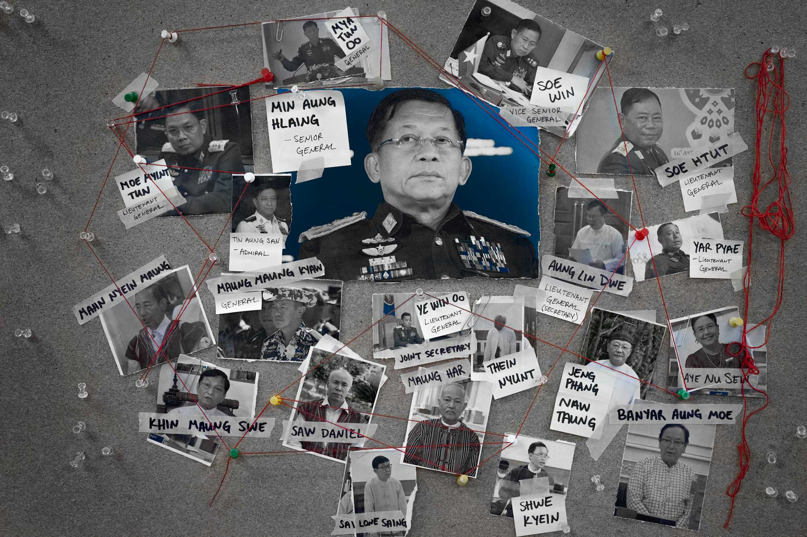

This project delves into the ongoing struggles faced by the Burmese
population, highlighting personal stories and data-driven insights to
shed light on the humanitarian crisis.

Pictured here are Senior Gen. Min Aung Hlaing and other members of the State Administration Council, the formal name of the government that the military installed a day after overthrowing a democratically elected parliament in Myanmar. Thousands have been killed and more than 1.2 million people displaced in the chaos triggered by the military’s coup. (Gemunu Amarasinghe, Amanda Weisbrod / RFA)
Click here to view the published project.
To mark the second year of junta rule in Myanmar, I helped produce a data-focused story showing how the regime has affected the Burmese people since they seized control of the country in 2021. I received the request from the Burmese language service to approach the graphics with a “social-media-first” mindset, so I designed them according to Instagram ratios and the technique of seamless carousels. The first Instagram post of this series received 12.8k impressions, which was almost double the average daily reach per post of RFA English’s Instagram account at that time.
After my initial meeting with the Burmese team, I narrowed down the proposed topics into five areas, then loosely decided on what infographics to produce for each section. My next step was to collect and clean datasets from a variety of sources, followed by more sketching and outlines. Once I made my final decision on what to design, I organized the graphics into a narrative flow, then approached the Investigative Unit for text to pair with them. I designed the graphics and sketched out a wireframe as a suggestion for our web designer while the text story was under way.
Finally, because this special project was developed in collaboration with the Burmese service, we also produced a Burmese version of the page, which meant redesigning all of the graphics with the correct translations. The result was an incredibly impactful package showing the injustices done to the Burmese people by their own government, which earned us a 2024 Edward R. Murrow award.
Programs used: Adobe Illustrator, Adobe InDesign, Adobe Photoshop, Flourish
Myself pictured with the 2024 Edward R. Murrow Award, given to RFA for this project under the Digital, National Network Radio category. (Charlie Dharapak / RFA)
Notes from my first meeting with the Burmese service (Amanda Weisbrod / RFA)
Graphics production plan I wrote out after researching story points and collecting relevant data. (Amanda Weisbrod / RFA)
Iterations of the graphics featured in the final project from earliest to latest drafts. (Amanda Weisbrod / RFA)
Click here to view the published project.